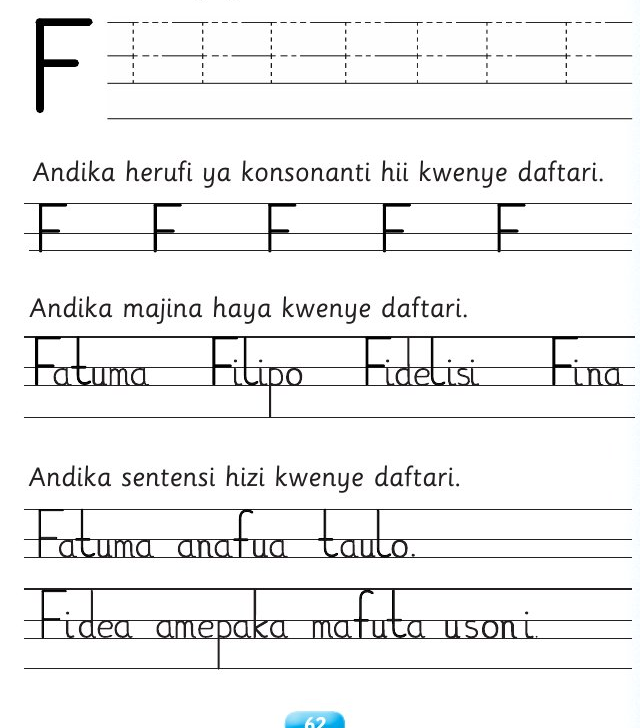
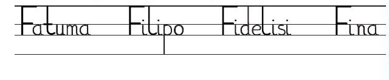
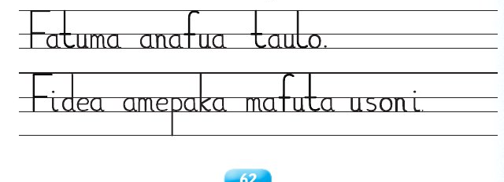

Somo la tano: Kuandika herufi ya konsonanti
Somo la tano
Kuandika herufi ya konsonanti F
Katika somo hili utajifunza kuandika herufi ya
konsonanti F .
Fuatisha herufi ya konsonanti F .

Andika jibu kwa mkono katika sehemu hii.
Andika herufi ya konsonanti hii kwenye daftari.
Mfano wa kuangalia
Andika jibu kwa mkono katika sehemu hii.
Andika majina haya kwenye daftari.

Andika jibu kwa mkono katika sehemu hii.
Andika sentensi hizi kwenye daftari.

Andika jibu kwa mkono katika sehemu hii.